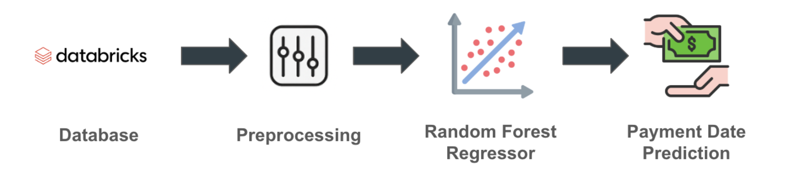

Predict Payment Date
1. Problem Definition / Objective
The following project was developed in a fintech company that provides credit cards to businesses. Companies make expenses throughout the month using these cards and later receive a billing statement with the total amount owed. The goal is to build a machine learning model that predicts the payment date of clients’ statements in order to take preventive actions for those customers the model predicts will pay late or not pay at all.
2. Data Available
The dataset includes all account statements from the last two years, containing the amount owed, the amount paid, the payment date, and various company characteristics such as size, country, income, etc.
3. Solution Development
- EDA: Identify patterns and extract insights
- Data preprocessing: Handle missing values, correct data types
- Feature Engineering: Create lag variables, perform operations between variables, and transform all features into numerical values
- Model Selection: Train and evaluate different machine learning models to predict the number of days it will take each client to pay their statement, selecting the one with the lowest MAE
- Parameter Optimization: Use Python’s Optuna library to perform Bayesian hyperparameter optimization
- Testing: Validate the model’s predictions
- Model Deployment
4. Tools and Technologies
- Databricks
- Python
- SQL
- Pandas
- Scikit-learn
- Supervised machine learning models
- Optuna library